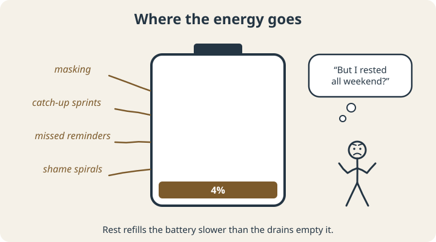
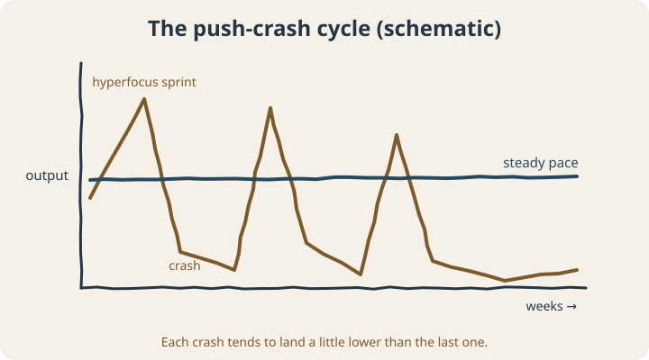

September 23, 2026
ADHD Burnout: Why You’re So Exhausted and What Actually Helps

There’s a specific kind of tired that sleep doesn’t fix.
You take the weekend off. You sleep in. You do nothing productive at all, on purpose, the way everyone tells you to. And Monday morning you open your laptop and feel exactly as empty as you did on Friday. Maybe emptier, because now there’s a weekend’s worth of email on top of it.
If you have ADHD, there’s a good chance you’ve searched for a name for this and found ADHD burnout. This post covers what that term means, what’s actually known about it, and how people climb out.
First: what “burnout” officially means
The World Health Organization describes burnout as a syndrome resulting from chronic workplace stress that hasn’t been successfully managed, with three parts: exhaustion, feeling mentally distant or cynical about your work, and a drop in how effective you feel.1 Importantly, WHO classifies it as an occupational phenomenon, not a medical diagnosis.
“ADHD burnout” isn’t an official term at all. It’s the phrase people with ADHD use for a broader version of the same collapse, one that often isn’t limited to work: the house, the relationships, the admin, the whole operation runs out of fuel at once.
Why ADHD brains are set up for it
1. Everything costs more
Think of your energy as a battery. Everybody’s drains over a day. But for a lot of people with ADHD, extra drains are running in the background all the time.

- Compensating. Double-checking everything, building workarounds, remembering what other people’s brains remember automatically.
- Masking. Looking calm and organized while paddling furiously underneath.
- Recovering from misses. The forgotten appointment, the late bill, the apology email. Each one costs time and emotional energy.
- Shame. Years of “you’re so smart, if you’d just try harder” don’t just disappear. They run in the background too.
2. Executive function is doing the heavy lifting
A 2024 study of 171 employees found that the link between ADHD symptoms and job burnout ran largely through executive function difficulties. Trouble managing time was tied to physical fatigue, and trouble with organization and problem-solving was tied to emotional exhaustion and mental weariness.3
That’s a useful finding, because it points at something changeable: specific skills being overloaded every day, rather than some mysterious personal weakness.
That lines up with what people with ADHD say in their own words. In interviews with 20 working adults with ADHD, researchers heard about work-related stress and exhaustion alongside real strengths like creative thinking and hyperfocus, and about how much it mattered whether managers understood what they were dealing with.4
3. The push-crash cycle
A lot of ADHD adults will recognize this pattern:

Falling behind creates urgency. Urgency unlocks hyperfocus. Hyperfocus produces a heroic sprint: you catch up, maybe even get ahead. Then you crash, hard, and fall behind again. Repeat.
Each sprint feels like proof that you can do it. But the sprints run on emergency fuel, and the crashes get deeper. Eventually there’s no emergency big enough to get you moving, and that’s the burnout.
Signs you might be there
- Rest doesn’t seem to restore you, even real rest
- Things you used to handle fine now feel impossible
- Your usual strategies and systems have stopped working
- You’re more irritable, more sensitive to noise and interruptions, quicker to shut down
- You’ve stopped caring about work or goals that used to matter to you
- Hyperfocus, your old emergency fuel, won’t start
Some of these overlap heavily with depression. If you’re feeling hopeless, losing interest in most things, or having thoughts of harming yourself, please talk to a doctor or mental health professional soon. If you’re in the U.S. and in crisis, you can call or text 988 any time.
How people recover
Recovery from the push-crash cycle usually means changing the shape of the line rather than doing more.
Stop the bleeding first
Before building anything new, cut what you can. What can be dropped, delayed, delegated, or done badly on purpose for a while? Burnout recovery with a full load is like trying to bail out a boat while someone keeps pouring water in.
Plug the biggest drains
Look back at the battery. Which drain is the biggest for you? If it’s missed reminders, the fix is a better external reminder system. If it’s masking, it might be one honest conversation with a manager. If it’s shame, it might be noticing how often you’re running the “why am I like this” tape. Fix one drain before you try to add a charger.
Trade sprints for a steadier pace
Deliberately work at maybe 70% on days you feel good, instead of burning everything. It feels wasteful at first. Over a month, though, a steady pace usually gets more done than the spiky one, and it doesn’t end in a crater.
Protect the basics
Sleep, food, and movement are boring advice, and they’re also the foundation everything else sits on. We wrote a whole post on starting with sleep and movement for exactly this reason.
Get the load out of your head
Every commitment you’re holding in working memory is a small, constant drain. A single capture list, a calendar you actually trust, and a weekly reset do more for burnout than any amount of willpower.
Where recovery starts
ADHD burnout isn’t an official diagnosis, but the experience is real: years of compensating, sprinting, and recovering until the tank is empty. The research points to executive function load as a big part of the story, and load can be redesigned. Recovery mostly comes from making each day cost less.
If you’re not sure where your energy is going, the free Quality of Life Wheel helps you rate eight areas of your life and see the patterns in one picture, which makes a good first map of what to protect and what to drop.
Scope note: This article is educational. Burnout and depression can look alike. If your mood, sleep, or ability to function has changed significantly, please see a doctor or mental health professional. Coaching isn’t a substitute for that care.
Sources
- World Health Organization. (2019). Burn-out an “occupational phenomenon”: International Classification of Diseases. who.int
- Raymaker, D. M., Teo, A. R., Steckler, N. A., Lentz, B., Scharer, M., Delos Santos, A., Kapp, S. K., Hunter, M., Joyce, A., & Nicolaidis, C. (2020). “Having all of your internal resources exhausted beyond measure and being left with no clean-up crew”: Defining autistic burnout. Autism in Adulthood, 2(2), 132–143. doi.org/10.1089/aut.2019.0079
- Turjeman-Levi, Y., Itzchakov, G., & Engel-Yeger, B. (2024). Executive function deficits mediate the relationship between employees’ ADHD and job burnout. AIMS Public Health, 11(1), 294–314. doi.org/10.3934/publichealth.2024015
- Oscarsson, M., Nelson, M., Rozental, A., et al. (2022). Stress and work-related mental illness among working adults with ADHD: A qualitative study. BMC Psychiatry, 22, 751. doi.org/10.1186/s12888-022-04409-w